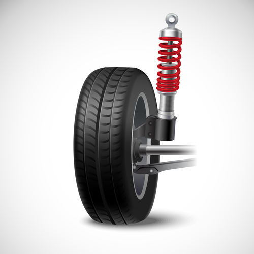
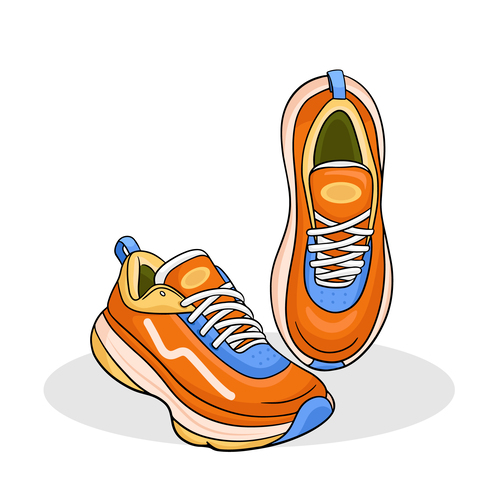
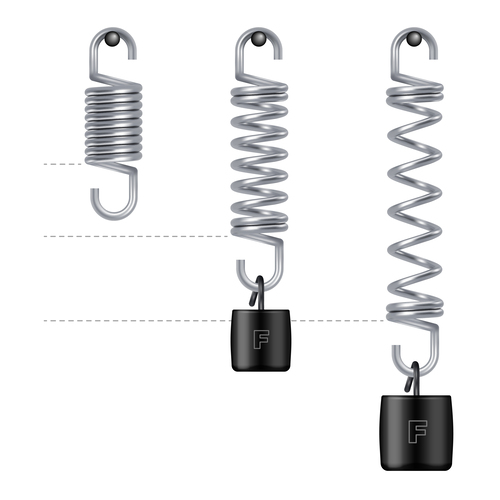

Força elástica
Objetivo
Verificar experimentalmente a Lei de Hooke, verificar o gráfico Força x Deslocamento e descobrir a constante elástica média da mola utilizada.
Materiais
- Um tripé grande em forma de A.
- Uma abraçadeira plástica.
- Um conjunto de massas aferidas.
- Uma mola ou mais de materiais diferentes.
- Uma régua milimetrada.
- Um gancho.
Obs: Caso não queira montar o sistema do zero, aqui está um Site para comprar o conjunto massa-mola pronto.
Teoria do experimento
No cotidiano, há situações em que certos materiais (sólidos) são submetidos a deformações. Quando um automóvel passa num buraco, as molas e amortecedores que fazem parte da sua suspensão são comprimidos, amortecendo o choque, evitando assim, danos ao veículo. Há alguns anos foram criados tênis com um tipo de material amortecedor nos calcanhares a fim de reduzir os impactos dos mesmos com o solo. É possível enumerar com facilidade uma série de situações onde certos materiais (sólidos) estão submetidos a uma distensão ou compressão, mas sem danificar.
 
Todo material sólido, quando comprimido, ou distendido, deforma-se. Deste modo, imaginemos, por exemplo, uma mola de aço com comprimento natural (comprimento da mola sem que ela esteja nem comprimida nem distendida), de 10cm. Esta mesma mola com uma de suas extremidades presa e a outra sendo puxada, mede 15cm. Se soltar a mola, ela voltará ao seu comprimento natural, o que indicaria a presença de uma força restauradora. O mesmo acontece se comprimir a mola (diminuindo seu comprimento), ou seja, quando soltar, ela tenderia a retornar ao comprimento natural.
Cada material sólido tem um limite de deformação no qual ele retorna a sua posição de origem e que é chamado de limite elástico. Ultrapassando este limite o material entra na fase plástica, onde a deformação não é mais reversível; ultrapassando o limite plástico, o material se rompe. Portanto deve-se ter cuidado e atenção no experimento para não danificar os materiais.
Construção do sistema massa-mola
Prenda a mola ao tripé utilizando a abraçadeira de forma que ela fique perpendicular ao chão, mas que não chegue a tocar no mesmo. Garanta que a mola esteja bem presa e que não esteja encostando no tripé ou no chão. Prenda o gancho à mola, de forma que ele também fique perpendicular ao chão, e sem tocar o mesmo. O gancho será o apoio para o conjunto de massas aferidas.
Experimento
Coloque aqui 6 medições da mesma mola sem nenhuma massa presa a ela. Faça isso para cada mola que utilizar.